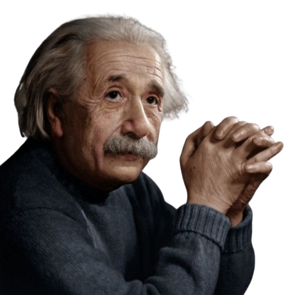

آلبرت انیشتین در سال ۱۸۷۹ در آلمان متولد شد. او در کودکی دیر زبان گشود و با سیستم آموزشی خشک مدرسهاش
میانهای نداشت؛ تا جایی که برخی معلمانش فکر میکردند او به جایی نخواهد رسید. اما ذهن انیشتین پر از
سوالات عمیق تصویری بود؛ مثلاً او در نوجوان از خود میپرسید: «اگر بتوانم روی یک پرتو نور سوار شوم، جهان
را چطور خواهم دید؟». او پس از فارغالتحصیلی از دانشگاه پلیتکنیک زوریخ، نتوانست شغل دانشگاهی پیدا کند و
به عنوان یک کارمند ساده در اداره ثبت اختراعات سوئیس مشغول به کار شد.
نقطه عطف زندگی انیشتین در سال ۱۹۰۵ رقم خورد که به آن «سال معجزهآسا» میگویند. او در حالی که یک کارمند
ساده بود، در اوقات فراغت خود ۴ مقاله علمی منتشر کرد که پایه فیزیک کلاسیک نیوتنی را لرزاند و فیزیک مدرن
را متولد کرد. او با معرفی تئوری نسبیت، ثابت کرد که زمان و مکان مطلق نیستند، بلکه به سرعت ناظر بستگی
دارند. انیشتین در سال ۱۹۲۱ برنده جایزه نوبل فیزیک شد. با روی کار آمدن نازیها در آلمان، او به آمریکا
مهاجرت کرد و تا پایان عمر در دانشگاه پرینستون به تحقیق پرداخت و در سال ۱۹۵۵ درگذشت، در حالی که نامش به
مترادفی برای واژه «نابغه» تبدیل شده بود.

بزرگ ترین دستاورد های آلبرت انیشتین
تبیین نظریه نسبیت خاص و فورمول E = mc²
انیشتین با این تئوری ثابت کرد که سرعت نور در کیهان، مرز نهایی سرعت و برای همه ناظرها ثابت است. این نظریه به
فرمول جادویی E=mc² ختم شد که نشان میدهد جرم و انرژی دو روی یک سکه هستند و مقدار ناچیزی از ماده میتواند
انرژی هولناکی آزاد کند؛ کشفی که پایه فیزیک هستهای و کیهانی شد.
ارائه نظریه نسبیت عام ( هندسه جاذبه )
او با این نظریه ثابت کرد که جاذبه، یک نیروی کششی نامرئی (طبق تعریف نیوتن) نیست؛ بلکه نتیجه انحنا و خمیدگی
بافت چهاربعدی «فضا-زمان» به دلیل وجود اجرام سنگین مانند ستارهها و سیارات است. این تئوری بعداً وجود
سیاهچالهها، کرمچالهها و انبساط کیهان را پیشبینی و اثبات کرد.
حل معمای اثر فوتوالکتریک و پایه گذاری کوانتوم
انیشتین اثبات کرد که نور علاوه بر رفتار موجی، از بستههای انرژی ذرهای به نام «فوتون» تشکیل شده است که با
برخورد به فلزات میتوانند الکترون آزاد کنند. او برای این کشف برنده جایزه نوبل فیزیک شد و عملاً یکی از
ستونهای اصلی فیزیک کوانتوم و تکنولوژیهای امروزی نظیر پنلهای خورشیدی و لیزر را بنا نهاد.
اثبات ریاضی وجود اتوم ها و مالیکول ها ( حرکت براونی )
در اوایل قرن بیستم هنوز بسیاری از دانشمندان به وجود واقعی اتمها شک داشتند. انیشتین با فرمولبندی ریاضی حرکت
نامنظم ذرات معلق در مایعات، ثابت کرد که این تکانها ناشی از بمباران مداوم ذرات توسط اتمها و مولکولهای
نامرئی آب است و با این کار وجود اتم را به یک یقین علمی تبدیل کرد.
نظریه امواج گرانشی
او پیشبینی کرد که پدیدههای عظیم کیهانی (مانند برخورد دو سیاهچاله) لرزشها و امواجی در بافت فضا-زمان ایجاد
میکنند که مانند موجهای روی آب در سراسر جهان پخش میشوند. این پیشبینی دقیقاً صد سال بعد در سال ۲۰۱۵ توسط
آشکارسازهای پیشرفته مستقیماً رصد و ثبت شد و پنجره جدیدی به نجوم گشود.
آمار بوز - انیشتین و پیش بینی چگالش بوز - انیشتین
انیشتین با همکاری دانشمند هندی، ساتیندرا بوز، رفتارهای آماری ذرات نور (بوزونها) را فرمولبندی کرد. او
پیشبینی کرد که اگر ماده تا دمای نزدیک به صفر مطلق سرد شود، اتمها هویت مستقل خود را از دست داده و به یک
«ابر اتم» واحد تبدیل میشوند؛ حالتی جدید از ماده که سالها بعد در آزمایشگاهها خلق شد.